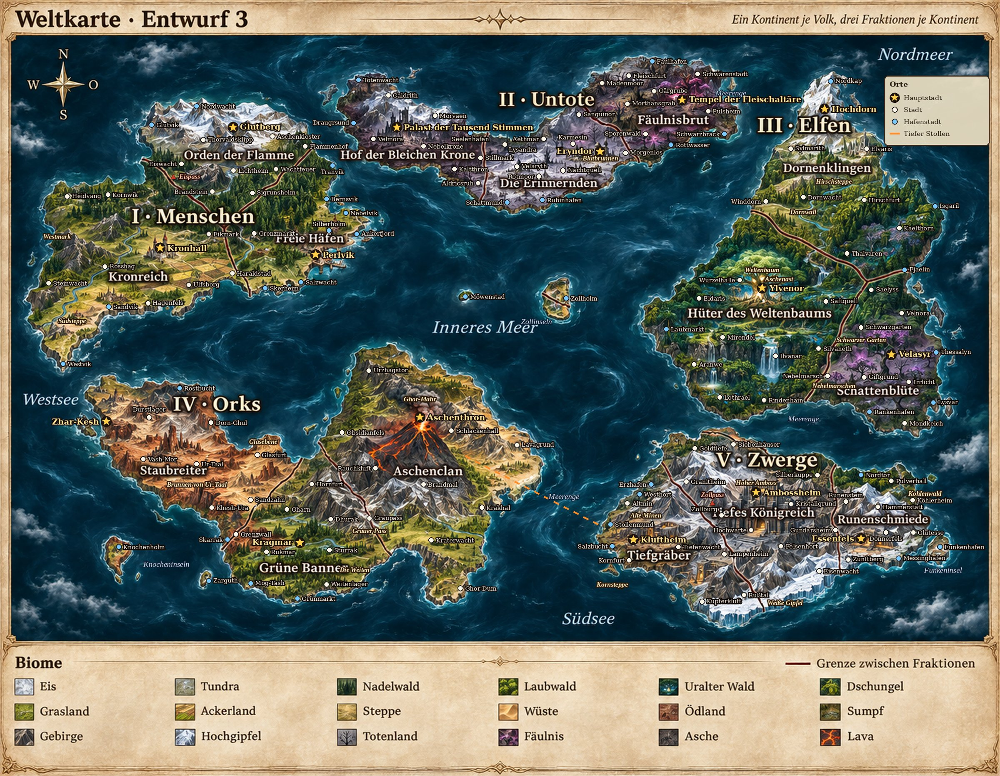
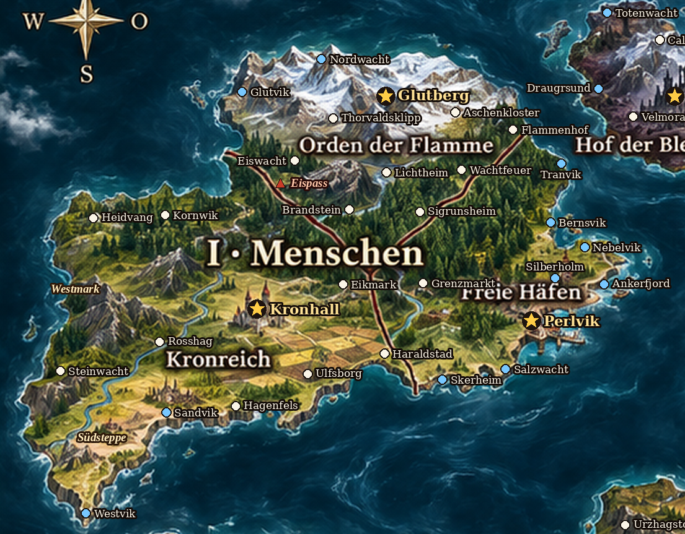
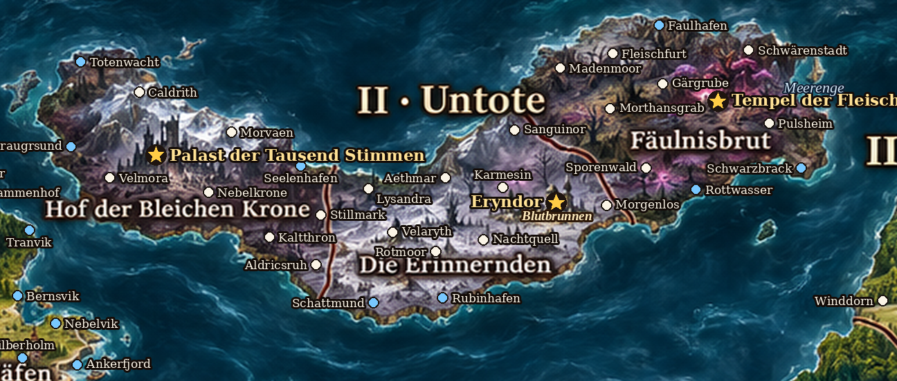
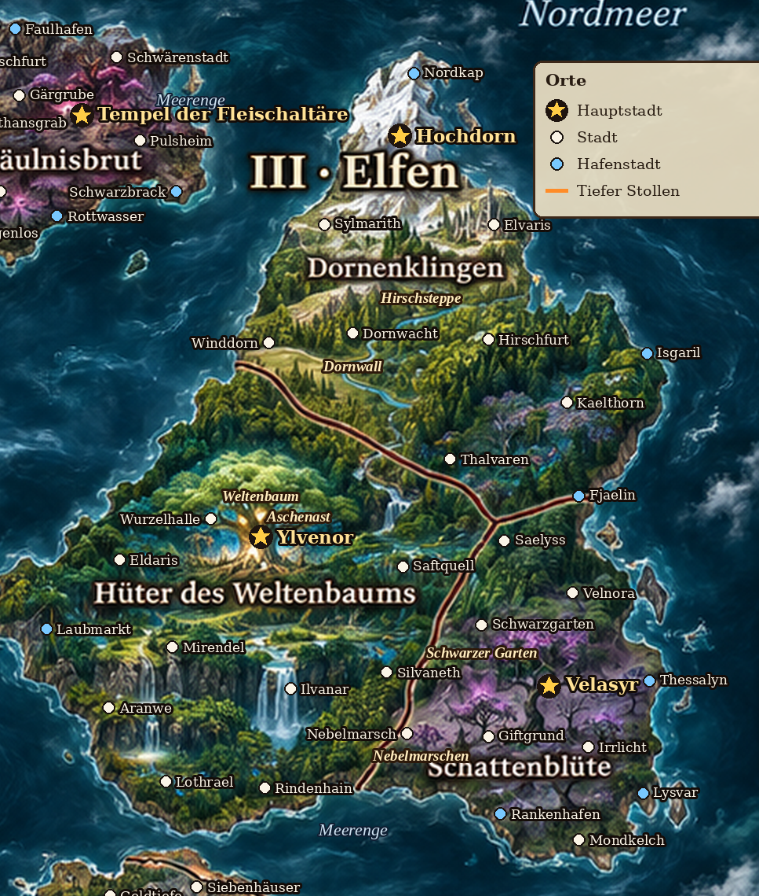
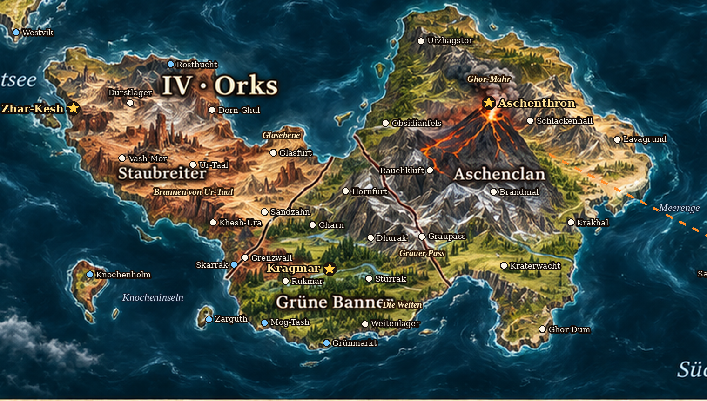
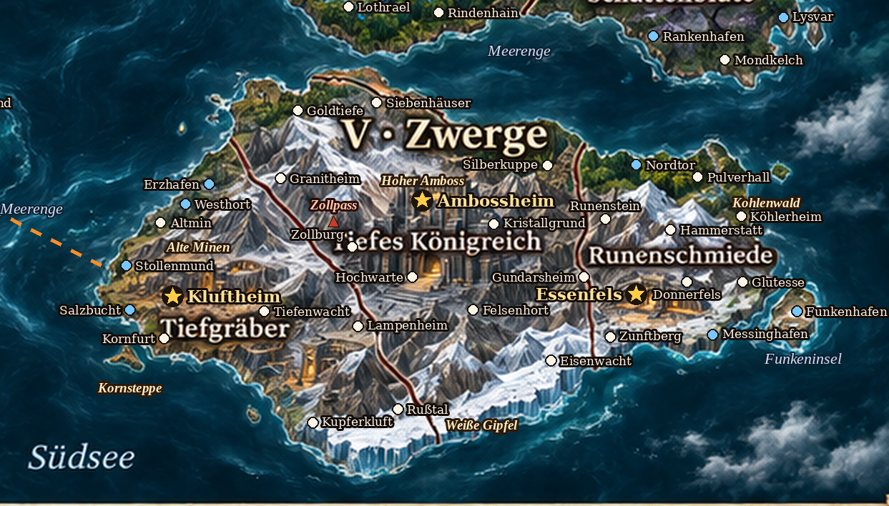

Weltbuch – Rollenspiel 2.0
Nov 16, 2026 · @Henry
Grundidee der Welt
Zuerst brauchen wir eine Grundidee, aus der sich Karte, Völker, Geschichte und Magie ableiten. Hier sind drei Vorschläge. Wähle einen, mische sie oder verwirf alle.
A · Die erlöschende Sonne
Die Sonne verblasst seit Jahrhunderten. Es gibt nur noch kurze, kalte Tage und lange Nächte. Licht ist die wertvollste Ressource der Welt.
Ton: düster, frostig, verzweifelt; jede Lichtquelle ist ein kleiner Zufluchtsort
Kernkonflikt: Wer kontrolliert die letzten Glutquellen, und was geschieht mit denen ohne Licht?
Magie: gebundenes Licht, das beim Wirken verbraucht wird
Für das Spiel: Reisen in die Dunkelheit sind gefährlich, Licht ist ein natürlicher Vorrat, den der Held planen muss
B · Der tote Gott
Vor langer Zeit fiel ein Gott vom Himmel und starb. Sein riesiger Leib wurde zum Land: Gebirge aus Knochen, Flüsse aus altem Blut, Wälder auf verwesendem Fleisch.
Ton: unheimlich, ehrfürchtig, körperlich; Schönheit und Verfall liegen nah beieinander
Kernkonflikt: Die Völker leben von den Überresten des Gottes. Doch er beginnt sich zu regen.
Magie: stammt aus dem Leib des Gottes, jede Nutzung zehrt an ihm oder weckt ihn
Für das Spiel: jede Region ist ein Körperteil mit eigenem Charakter; das Erwachen ist eine natürliche Uhr für die Kampagne
C · Die steigende Nebelflut
Ein uralter Nebel steigt jedes Jahr ein Stück höher und verschlingt das Land. Wer im Nebel bleibt, verliert erst die Erinnerung und dann sich selbst. Übrig sind Inseln, Hochebenen und Berggipfel.
Ton: melancholisch, bedrohlich, geheimnisvoll; eine Welt im langsamen Untergang
Kernkonflikt: Das Land wird knapp, die Völker drängen nach oben und gegeneinander
Magie: Erinnerungen als Währung und Kraftquelle; der Nebel frisst sie
Für das Spiel: unter dem Nebel liegen versunkene Reiche voller Schätze, ideal für Erkundung in der offenen Welt
Offene Fragen
Welche Grundidee, oder welche Mischung?
Wie viele Völker soll die Welt haben, und sollen es klassische (Elfen, Zwerge) oder ganz eigene sein?
Weltkarte
Die verbindliche Karte zeigt jetzt alle 15 Hauptstädte, alle 150 Städte und die wichtigsten Orte aus den fünf Volksdokumenten. Grundlage ist Henrys illustrierte Karte. Wo Karte und Volksdokument voneinander abweichen, gilt das Dokument.

Zeichen: Stern = Hauptstadt, weißer Punkt = Stadt, blauer Punkt = Hafenstadt, rotes Dreieck = Pass, orange gestrichelt = Tiefer Stollen, kursiv = Landschaft oder Ort ohne Stadt.
Detailkarten
I · Menschen (Nordwesten)

II · Untote (hoher Norden)

III · Elfen (Osten)

IV · Orks (Südwesten)

V · Zwerge (Südosten)

Offene Abweichung: Laut Elfen-Dokument reicht der Wald der Hüter vom Inneren Meer bis an die Ostküste. Auf der Karte gehört die mittlere Ostküste noch zur Schattenblüte. Die Städte sind nach der Karte verteilt.
Völker und Fraktionen
Jedes Volk teilt seinen Kontinent unter drei Fraktionen auf. Jede Fraktion hat eine Hauptstadt und zehn Städte. Diese Übersicht fasst Henrys fünf Volksdokumente zusammen (Stand 16.11.2026). Die Einzelheiten zu Geschichte, Anführern, Militär, Spielwerten und Hauptquests stehen dort.
I · Menschen
Das jüngste und zahlreichste Volk mit nordisch geprägter Kultur. Die drei Fraktionen sind aus dem Alten Reich hervorgegangen, das am Krieg gegen die Untoten zerbrach.
| Fraktion | Gebiet | Hauptstadt | Wesen |
|---|---|---|---|
| Kronreich | Westen und Süden: Ackerland, Grasland, Südsteppe | Kronhall | Feudalkönigreich ohne Magie, Kornkammer der Menschen, schwere Reiterei |
| Orden der Flamme | Gebirge und Schneefelder im Norden | Glutberg | religiöser Ritterstaat, einzige Magie der Menschen, Kampf gegen die Untoten |
| Freie Häfen | Ostküste am Inneren Meer und die Zollinseln | Perlvik | Bund reicher Handelsstädte, stärkste Flotte, Schwarzpulver und Spione |
Im Verborgenen aller drei Fraktionen wirkt der Kult der Bleichen Ewigkeit (nicht spielbar).
II · Untote
Auf dem Nordkontinent lagen einst die Reiche der Aethari und Vaelthar. Alle drei Fraktionen brauchen die Lebenden: die Krone braucht Körper, die Erinnernden Blut, die Fäulnisbrut lebendes Fleisch.
| Fraktion | Gebiet | Hauptstadt | Wesen |
|---|---|---|---|
| Hof der Bleichen Krone | Westen, das alte Vaelthar | Palast der Tausend Stimmen | Geisterreich unter dem Lichkönig Aldric, schafft Draugr aus Körpern der Lebenden |
| Die Erinnernden | Mitte und Süden | Eryndor | Vampiradel der Aethari, nimmt mit dem Blut Erinnerungen auf |
| Fäulnisbrut | Osten | Tempel der Fleischaltäre | Kult um Morthan Vel, verseuchtes Land, das sich selbst ausbreitet |
III · Elfen
Das älteste lebende Volk und die mächtigsten Magier. Ihr langes Leben verdanken sie dem Weltenbaum, der seit gut zweihundert Jahren welkt.
| Fraktion | Gebiet | Hauptstadt | Wesen |
|---|---|---|---|
| Dornenklingen | Gebirge im Norden mit dem Nordkap, Hirschsteppe | Hochdorn | Kriegerschaft gegen die Fäulnis, vom Wurzelrat losgesagt |
| Hüter des Weltenbaums | uralter Wald in der Mitte | Ylvenor | Rest des Immergrünen Reiches, stärkste Magie, abgeschottet |
| Schattenblüte | Dschungel und Sümpfe im Süden | Velasyr | verbannte Elfen, leben vom Nektar der schwarzen Blüte, Gifte und Spionage |
IV · Orks
Das stärkste Kriegervolk. Der Ausbruch des Mutterbergs Ghor-Mahr um 150 v. E. zerriss das Großbanner in drei Clans, und heute grollt der Berg wieder.
| Fraktion | Gebiet | Hauptstadt | Wesen |
|---|---|---|---|
| Staubreiter | Wüste und Ödland im Westen, Knocheninseln | Zhar-Kesh | Nomaden und Piraten auf Dornechsen und unter den Rostsegeln |
| Aschenclan | Vulkan Ghor-Mahr und Gebirge in der Mitte, Osten bis ans Innere Meer | Aschenthron | Kriegerkaste, achtet nur Stärke, sieht sich als Erbe des Großbanners |
| Grüne Banner | Grasland und Hügel im Süden | Kragmar | sesshafte Hirtensippen, handeln mit den Freien Häfen |
V · Zwerge
Die besten Schmiede und reichsten Händler. Seit etwa 560 n. E. graben die Tiefgräber den Tiefen Stollen unter den Mutterberg der Orks.
| Fraktion | Gebiet | Hauptstadt | Wesen |
|---|---|---|---|
| Tiefes Königreich | Gebirge in der Mitte, von den Nordpässen bis zu den Weißen Gipfeln | Ambossheim | Hochkönig und Rat der Sieben Häuser, meiste Krieger und Gold |
| Runenschmiede | Ostberge, Nordküste, Kohlenwald, Funkeninsel | Essenfels | freie Gilde der Runenmeister und Pulvermacher |
| Tiefgräber | Hügel und Berge im Westen, Kornsteppe an der Westküste | Kluftheim | Bergmannshäuser, graben den Tiefen Stollen |
Gleichgewicht der Welt
Ohne Spieler bleibt die Welt im Patt. Jedes Volk verfolgt seine Ziele, aber keines einigt sich allein, kein Ritual wird vollendet und keine Leiste erreicht 0 oder 100. Nur die Entscheidungen des Spielers können dieses Patt brechen. Herleitung und Simulation stehen im Dokument Gleichgewicht der Welt – Vorschlag: Ohne Spieler liegen 650 n. E. in 98 % der Durchläufe alle Leisten zwischen 20 und 80.
Grundregeln
Schwüre und Rituale brauchen den Spieler. Reichsthing, Wurzelschwur, Bannerschwur, Schwur am Amboss und die Vollendeten gelingen nur, wenn der Spieler sie herbeiführt. Ohne ihn stehen in jedem Volk höchstens zwei von drei Fraktionen zusammen. Dasselbe gilt für Ahnenfeuer, Siegelrune und Grüner Gesang.
Jede Leiste hat eine Gegenkraft. Über ihrer Schwelle reagiert die Welt von selbst und drückt die Leiste zurück. Unter 20 wird die Welt nachlässig und die Leiste steigt um 1 bis 2 pro Runde.
Die großen Streitfragen bleiben offen. Thronfolge, Serathias Erwachen, Iseldes Wahrheit, der Kreis der Asche und Hildebrands Wahl werden nur durch den Spieler entschieden.
Rituale bannen, sie löschen nicht. Ein vollendetes Ritual setzt seine Leiste auf 10 und senkt sie 5 Runden lang weiter. Die Gefahr kann später wiederkehren.
Die Spielwerte bleiben. Jede Fraktion behält ihre 18 Punkte und ihre Schwierigkeit aus den Volksdokumenten.
Leisten
| Leiste | Start 612 | Schwelle der Gegenkraft | Gegenkraft ohne Spieler | Wirkung je Runde |
|---|---|---|---|---|
| Untoten-Bedrohung | 35 | ab 50 | Krieg der Drei: Bleiche Krone, Fäulnisbrut und Erinnernde binden sich gegenseitig | −5 |
| Ork-Bedrohung | 40 | ab 55 | Kronreich und Freie Häfen schicken eine gemeinsame Flotte | −3 |
| Glut des Mutterbergs | 30 | ab 45 | Bebenfurcht der Tiefgräber, halbes Aschenlied von Morga und Ilvara | −3 bis −4 |
| Erzfieber | 45 | ab 50 | Das Tiefe Königreich sperrt den Zollpass | −3 |
| Welke | 30 | ab 45 | Der Nektar versiegt, die Dornenklingen brennen Fäulnis aus | −3 |
Die Schwellen aus den Volksdokumenten (Glut 50 Ascheregen, Welke 50 keine Geburten, Erzfieber 50 heizt die Glut) gelten weiter. Ohne Spieler bleibt die Welt knapp darunter.
Rolle jeder Fraktion im Gleichgewicht
| Volk | Fraktion | Was sie ohne Spieler tut | Was nur der Spieler auslöst |
|---|---|---|---|
| Menschen | Kronreich | Hält das Reich, kann aber keinen Nachfolger krönen. Solange Harald IV. lebt, nur halbe Truppen für Feldzüge außerhalb. | Thronfolge (Astrid oder Ragnvald), Reichsthing |
| Menschen | Orden der Flamme | Jagt den Kult, findet den Bleichen Skalden aber nie allein. | Freydis’ Spur zum Skalden folgen |
| Menschen | Freie Häfen | Stellt die Flotte gegen die Orks und verlangt dafür Handelsrechte. | Frieden oder Bruch mit dem Kronreich |
| Untote | Hof der Bleichen Krone | Herrscht in Eryndor, wagt nicht, Serathia zu wecken. | Serathias Erwachen, der Blutbrunnen |
| Untote | Fäulnisbrut | Gefallene stehen im verseuchten Land als Gebundene auf. Außerhalb zerfallen Gebundene nach einer Runde. | Feldzüge, die das verseuchte Land ausweiten |
| Untote | Die Erinnernden | Bremsen den Hof, sobald die Untoten-Bedrohung 50 erreicht. | Die Vollendeten |
| Elfen | Hüter des Weltenbaums | Ilvara singt ab Glut 45 ein halbes Aschenlied. | Wurzelschwur, Grüner Gesang |
| Elfen | Dornenklingen | Halten den Norden. Ab Welke 45 brennen sie Fäulnis aus und verlieren dafür Truppen. | Ausfall nach Norden gegen die Untoten |
| Elfen | Schattenblüte | Erntet weiter Nektar, aber gedrosselt. | Iseldes Wahrheit im Schwarzen Garten |
| Orks | Aschenclan | Kragh ruft zum Großbanner, bekommt aber höchstens zwei Clans zusammen. | Kreis der Asche (Durza oder Kragh), Ahnenfeuer |
| Orks | Staubreiter | Bleiben unabhängig und dienen dem Meistbietenden. | Ihre Treue gewinnen, Bannerschwur |
| Orks | Grüne Banner | Halten ihre Verträge mit den Menschen. | Die Schlacht am Grauen Pass |
| Zwerge | Tiefes Königreich | Sperrt ab Erzfieber 50 den Zollpass und verliert dafür Handel und Vorräte. | Schwur am Amboss |
| Zwerge | Runenschmiede | Schützt einzelne Stollen mit Runen. | Die Siegelrune |
| Zwerge | Tiefgräber | Halten ab Glut 45 aus Bebenfurcht inne. | Hildebrands Wahl am Herz des Berges |
Hebel des Spielers
Ein Hebel verschiebt eine Leiste um 10 bis 15 Punkte, eine Gegenkraft nur um 3 bis 5 pro Runde. Deshalb wirkt jede Entscheidung des Spielers über mehrere Runden nach. Die Hebel im Einzelnen:
Der Bleiche Skalde: entlarvt Untote −15, verschwiegen Untote +10.
Hildebrands Wahl: weitergraben Glut +15 und Weg zur Einigung der Zwerge, Stollen schließen Erzfieber −15.
Der Graue Pass: Sieg der Grünen Banner öffnet den Bannerschwur, Niederlage Ork-Bedrohung +10.
Kreis der Asche: Durza wendet die Orks nach innen, Kragh bringt Ork-Bedrohung +10.
Der Schwarze Garten: Ernte beenden Welke −15, weiter ernten Welke +10.
Der Blutbrunnen: zerstört lassen schwächt die Untoten dauerhaft, erneuern bringt Untote +15 und kann Serathia wecken.
Rituale: gelungen setzen sie ihre Leiste auf 10, gescheitert +10.
Festgelegte Entscheidungen
Kein Volk einigt sich ohne den Spieler.
Gebundene der Fäulnisbrut zerfallen außerhalb von verseuchtem Land. Die Fraktion bleibt trotzdem leicht, weil sie zu Hause weiter von selbst wächst.
Rituale setzen ihre Leiste auf 10, nicht auf 0.
Startwerte für Untote, Orks und Glut sind 35, 40 und 30, bis Henry andere Zahlen festlegt.
Der Spieler spielt eine Fraktion seines Volkes und muss die anderen beiden für die Einigung gewinnen.
Wichtige Orte
Diese Orte sind für Geschichte und Spiel besonders wichtig und stehen alle auf der Karte. Alle 150 Städte stehen auf den Detailkarten und in den Volksdokumenten.
| Ort | Volk · Fraktion | Bedeutung |
|---|---|---|
| Glutberg | Menschen · Orden | heiliger Gipfel, in dem die Ewige Flamme seit über 270 Jahren brennt |
| Eispass | Menschen · Orden | einziger befahrbarer Pass vom Orden ins Kronreich |
| Kronhall | Menschen · Kronreich | Hauptstadt mit der Weißen Königshalle |
| Westmark | Menschen · Kronreich | Fischerdörfer an der Westsee, von Orkpiraten bedroht |
| Perlvik | Menschen · Freie Häfen | größte Hafenstadt, Sitz des Hafenthings |
| Zollinseln | Menschen · Freie Häfen | wer das Innere Meer durchquert, zahlt hier Zoll |
| Palast der Tausend Stimmen | Untote · Bleiche Krone | Thron des Lichkönigs Aldric |
| Eryndor und der Blutbrunnen | Untote · Erinnernde | versiegter Brunnen, unter dem Serathia schläft |
| Tempel der Fleischaltäre | Untote · Fäulnisbrut | Sitz Morthans und seiner Altäre |
| Weltenbaum und Ylvenor | Elfen · Hüter | Quelle allen elfischen Lebens, Stadt im Geäst |
| Nordkap und Dornwall | Elfen · Dornenklingen | verbrannte Küste gegenüber der Fäulnisbrut, lebender Wall durch die Steppe |
| Schwarzer Garten | Elfen · Schattenblüte | Feld der schwarzen Blüten auf den südlichen Wurzeln |
| Ghor-Mahr | Orks · Aschenclan | der Mutterberg, Vulkan und Sitz der Ahnengeister |
| Grauer Pass | Orks · Aschenclan | einziger Weg durchs Gebirge zu den Grünen Bannern |
| Brunnen von Ur-Taal | Orks · Staubreiter | große Oase, Treffpunkt aller Sippen |
| Knocheninseln | Orks · Staubreiter | Versteck für Beute und Gefangene |
| Grünmarkt | Orks · Grüne Banner | Handelshafen der Freien Häfen an der Südküste |
| Hoher Amboss und Ambossheim | Zwerge · Tiefes Königreich | höchster Berg, Königsstadt mit der Königsbank |
| Zollpass | Zwerge · Tiefes Königreich | hier verzollt die Krone das Erz der Tiefgräber |
| Nordtor | Zwerge · Runenschmiede | Festung und Handelshafen zu den Elfen |
| Funkeninsel | Zwerge · Runenschmiede | hier wird das Donnerpulver erprobt |
| Tiefer Stollen | Zwerge · Tiefgräber | führt von Stollenmund unter der Meerenge bis unter den Mutterberg |